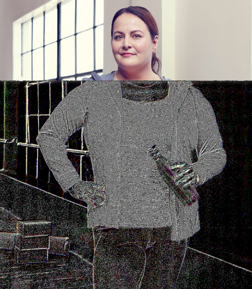

O CHOROBIE
Otyłość, choć jest znana od wieków, na Międzynarodową Listę Chorób i Problemów Zdrowotnych
Światowej Organizacji Zdrowia (WHO) została wpisana (pod kodem E66) dopiero w 1966r. Niemal od razu
uznano ją za największą i najgroźniejszą, ale też niezwykle skomplikowaną i wciąż mało rozpoznaną
chorobę cywilizacyjną.
Światowej Organizacji Zdrowia (WHO) została wpisana (pod kodem E66) dopiero w 1966r. Niemal od razu
uznano ją za największą i najgroźniejszą, ale też niezwykle skomplikowaną i wciąż mało rozpoznaną
chorobę cywilizacyjną.
Jaka jest przyczyna?
Przyczyną otyłości jest przyjmowanie większej niż potrzebujemy do normalnego funkcjonowania ilości jedzenia.
Nadmiar
pokarmu, nie zamieniony w energię odkłada się w naszym organizmie w postaci tkanki tłuszczowej – co jest najbardziej
widocznym efektem ubocznym choroby.
pokarmu, nie zamieniony w energię odkłada się w naszym organizmie w postaci tkanki tłuszczowej – co jest najbardziej
widocznym efektem ubocznym choroby.
Uczucie sytości i głodu
Głównym sprawcą choroby otyłości są hormony odpowiadające za przesyłanie do mózgu sygnałów
o sytości i głodzie. Wśród nich najważniejsza jest grelina, wydzielana przez komórki znajdujące się
w ściankach żołądka. Lekarze wskazują na istnienie ok. 50 czynników, które mogą zakłócić wydzielanie greliny i jednocześnie
przestrzegają, że może być ich nawet kilka tysięcy, bo przyczyny otyłości jako choroby wciąż są badane.
o sytości i głodzie. Wśród nich najważniejsza jest grelina, wydzielana przez komórki znajdujące się
w ściankach żołądka. Lekarze wskazują na istnienie ok. 50 czynników, które mogą zakłócić wydzielanie greliny i jednocześnie
przestrzegają, że może być ich nawet kilka tysięcy, bo przyczyny otyłości jako choroby wciąż są badane.
Najważniejsze czynniki destabilizujące działanie hormonów głodu/sytości:
- nieprawidłowe odżywianie
- brak ruchu, dzięki któremu przyjmowany pokarm zamienia się w energię,
- spożywanie pustych kalorii w postaci np. alkoholu,
- palenie papierosów,
- leki przyjmowane w
leczeniu innych schorzeń –
np.
antydepresanty, leki hormonalne zażywane
podczas leczenia niepłodności, - zaburzenia genetyczne i
hormonalne – otyłość
współwystępuje m.in. z zespołem Downa,
zespołem Cushinga, czy chorobą tarczycy, - stres, depresja, destabilizacja emocjonalna, lęki, fobie.
WSKAZÓWKI DOTYCZĄCE ŚWIADOMEGO JEDZENIA
CZYNNIKI POWODUJACE OBJADANIE SIĘ
LISTA ZAMIENNIKÓW ŻYWIENIOWYCH

OTYŁOŚĆ – DO CZEGO PROWADZI?
Choroby układu krążenia
U osób otyłych najczęściej występuje choroba wieńcowa (choroba niedokrwienna serca), miażdżyca, nadciśnienie
tętnicze. Choroba niedokrwienna serca jest diagnozowana u ponad 40 proc. osób otyłych. W porównaniu z
osobami o prawidłowej masie ciała, otyli są o 1,5-krotnie bardziej narażeni na wystąpienie tego schorzenia.
Ryzyko zawału serca dla otyłej kobiety jest około trzy razy wyższe niż dla szczupłej kobiety w tym samym
wieku.
Choroby nowotworowe
Otyłość jest jednym z czynników ryzyka chorób nowotworowych. U otyłych kobiet rośnie prawdopodobieństwo
zachorowania na raka sutka, pęcherzyka żółciowego czy jelita grubego. Mężczyźni są bardziej narażeni na
nowotwór prostaty i jelita grubego. U wszystkich otyłych istnieje też wyższe ryzyko raka trzustki i wątroby.
Cukrzyca typu 2
Im większa otyłość, tym większe ryzyko rozwoju cukrzycy. Wśród osób chorujących na cukrzycę 80 proc.
stanowią ludzie otyli. Ponad 400 tys. osób co roku zapada na tę chorobę, liczbę chorych liczymy już w
milionach. Średnio co 2 h dokonuje się dużej amputacji związanej z cukrzycą.
Schorzenia pęcherzyka żółciowego
Schorzenia pęcherzyka żółciowego sześć razy częściej dotyczą osób z nadwagą. Wysokie stężenie cholesterolu w
żółci, a niskie kwasów żółciowych, zwiększa skłonność do tworzenia się kamieni.
Zaburzenia miesiączkowania
Otyłe kobiety często cierpią z powodu zaburzeń cyklu miesiączkowego oraz przedłużonych krwawień. Mają także
zaburzenia hormonalne, które niejednokrotnie utrudniają zajście w ciążę. Ryzyko bezpłodności u otyłych
mężczyzn jest podwyższone o 25 proc.
Choroby zwyrodnieniowe stawów
Choroby zwyrodnieniowe obciążonych nadwagą stawów, takich jak stawy kolanowe, są bardzo powszechnym
powikłaniem nadwagi i otyłości. Zbyt silny nacisk na stawy prowadzi do uszkodzenia błony wyściełającej
stawy.

EPIDEMIOLOGIA – OTYŁOŚĆ W LICZBACH
OECD Health Policy Studies
W krajach objętych badaniem OECD (52) liczba osób otyłych z jednej piątej w 2010 r. wzrosła w tym roku
(2019
r.) do prawie jednej czwartej, a w większości krajów ponad połowa osób ma nadwagę. Badanie pokazało, że
nadwaga i otyłość skrócą długość życia Polaków o blisko 4 lata.
Według badania w najbliższych 30 latach Polska straci na chorobach wywołanych otyłością 4,1 proc. PKB. Przekładając to do wartości PKB za ostatnie cztery kwartały, wychodzi prawie 3 mld zł rocznie. Każdy z 16,5 mln pracujących Polaków płaci za leczenie chorób z otyłości 182 zł rocznie.
Według badania w najbliższych 30 latach Polska straci na chorobach wywołanych otyłością 4,1 proc. PKB. Przekładając to do wartości PKB za ostatnie cztery kwartały, wychodzi prawie 3 mld zł rocznie. Każdy z 16,5 mln pracujących Polaków płaci za leczenie chorób z otyłości 182 zł rocznie.
NCD Risk Factor Collaboration (NCD-RisC)
Trzech na pięciu dorosłych Polaków ma nadwagę, a jeden na czterech jest otyły. Skala tego zjawiska
systematycznie rośnie. Nie ma też co liczyć na poprawę, prognozy nie są optymistyczne — szacuje się, że w
2025 r. otyłych będzie 26% dorosłych kobiet i 30% dorosłych mężczyzn.
WHO
Nadmiar zbędnych kilogramów ma 31% chłopców i 20% dziewczynek. Z otyłością zmaga się już 13% chłopców i 5%
dziewczynek.